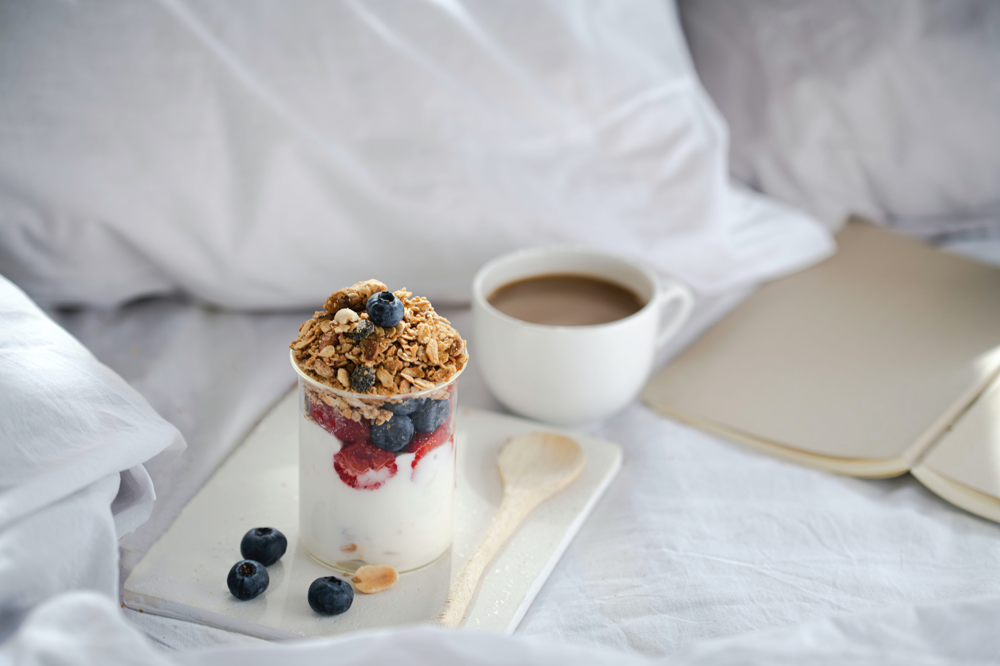
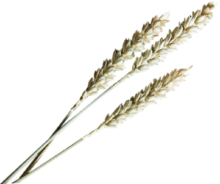
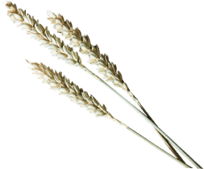
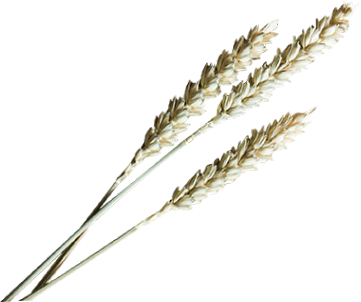
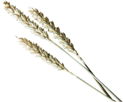
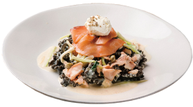
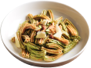
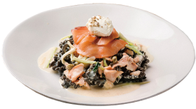
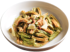

感受原始石臼研磨的溫度
用心研磨每顆鮮麥，以時間濾出小麥的原始香氣跟風味， 就像來到知其所食的老義大利時代，用餐即是愉悅的享受。
用心研磨每顆鮮麥，以時間濾出小麥的原始香氣跟風味， 就像來到知其所食的老義大利時代，用餐即是愉悅的享受。
 



麥子品質是關鍵！麥子的品種、硬度及蛋白質含量，左右了麵的口感、吸水度及最重要的風味， 以獨家比例調配出最佳風味的手工義大利麵，為的就是留在你口中那淡淡的麥香。

復刻過去的老義大利時代，將整顆鮮麥，連同麥麩、胚芽、麥皮，一起放入石臼研磨， 石臼的轉速慢、磨溫低，避免了大型機械因高溫、高壓對小麥的有效營養和品質產生破壞， 花費2倍以上的時間及成本，只為完整保留全麥的全營養！
你沒看錯！鮮麥現磨現做的義大利麵只需下鍋60秒，就能達到義大利人心中， 沒有麵粉生味，仍保有一點生麵心，彈牙鮮嫩的口感， 與市面上的廠製乾燥義大利麵較為扎實有嚼勁的口感截然不同。

 



Tortellini為義大利文肚臍的意思，另有肚臍餃之稱。 五種顏色分別加入了墨魚、甜菜根、胡蘿蔔、菠菜等天然食材製成，依照顏色分別搭配五種不同餡料， 每口都是驚喜！
Tortellini is ring-shaped pasta, sometimes also described as "navel shaped". We fill variety of pasta sheet up with five kinds of seafood mousse. It is really great taste in your mouth when savoring the flavors of each mouthful.


如紙一般輕薄柔軟的現做麵皮，經過清洗、搓揉、晾乾繁複的動作， 與肉醬層層交疊烘烤，在口中構成麵皮與餡料最平衡的滋味。
As classic Italian dishes, we think lasagne should be kept simple – homemade flat-shaped pasta sheet, layering with savory meat sauce, creamy bèchamel, and parmigiano. Its taste is flavorful, and that'll make you feel satisfied.
使用甜菜根、胡蘿蔔、菠菜等天然食材製成三色義大利麵， 貝殼的外型除了有趣還能微微容納醬汁及切成丁狀的食材！
This small, seashell-shaped pasta originates from Italy, it is specifically designed to hold more sauce. We make the shell pasta with beetroot, carrot and spinach puree. It is interesting and yummy.

「香辣多汁，真材實料！一試成主顧，讓我一嚐再嚐，尤其是露營出去玩最方便。」

「香辣多汁，真材實料！一試成主顧，讓我一嚐再嚐，尤其是露營出去玩最方便。」
「香辣多汁，真材實料！一試成主顧，讓我一嚐再嚐，尤其是露營出去玩最方便。」